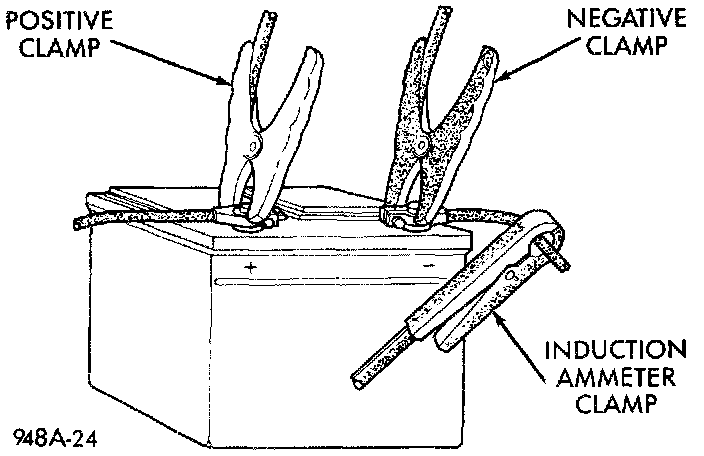
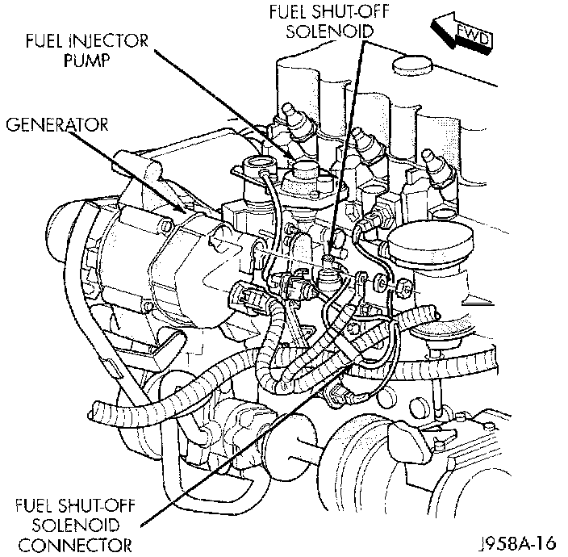

Cold Cranking Test
The battery must be fully-charged and load-tested before proceeding.Volts-Amps Tester Connections - Typical:

1. Connect a suitable volt-ampere tester to the battery terminals. Refer to the operating instructions provided with the tester being used.
2. Fully engage the parking brake.
3. If the vehicle is equipped with an automatic transmission, place the gearshift selector lever in the Park position. If the vehicle is equipped with a manual transmission, place the gearshift selector lever in the Neutral position and fully depress the clutch pedal.
4. Verify that all lamps and accessories are turned off.
Fuel Shut Off Solenoid Connector:

5. Unplug the Automatic Shut Down (ASD) relay to prevent a gasoline engine from starting. The ASD relay is located in the Power Distribution Center (PDC). Refer to the PDC label for ASD relay identification and location. To prevent a diesel engine from starting, unplug the fuel shut off solenoid wire harness connector.
6. Rotate and hold the ignition switch in the Start position. Note the cranking voltage and current (amperage) draw.
a. If the voltage reads above 9.6 Volts and the current (amperage) draw reads above specifications, see the Feed Circuit Test procedures.
b. If the voltage reads 12.5 Volts or greater and the current (amperage) draw reads below specifications, see the Control Circuit Test procedures.
NOTE: A cold engine will increase the starter current (amperage) draw reading, and reduce the battery voltage reading.